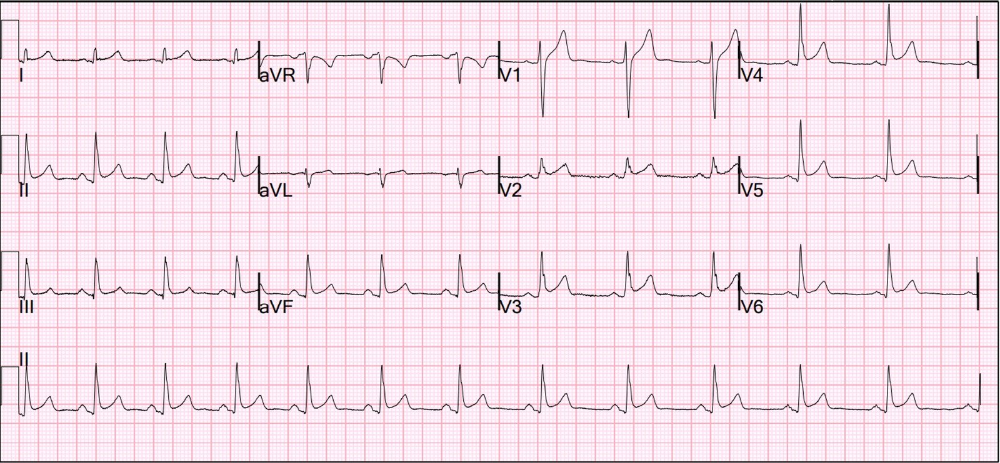
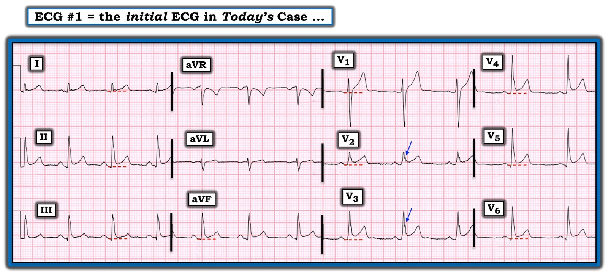

17/10/2022 — Có biến dạng phần cuối QRS không?
Bản dịch tiếng Việt của bài "Is there Terminal QRS Distortion?" – Dr. Smith’s ECG Blog. Giữ nguyên toàn bộ 2 hình ảnh của bản gốc.
Điện tâm đồ này có ST chênh lên ở nhiều chuyển đạo. Đây là ST chênh lên bình thường? Hay là ST chênh lên do thiếu máu cục bộ?


Bạn nghĩ sao?
Điện tâm đồ này thú vị vì nó giống biến dạng phần cuối QRS (TQRSD). Không có sóng S ở V2 và V3. NHƯNG hãy nhìn các sóng J rất nổi bật (khía điểm J)!! Chúng cao vài mm!
Đây là một điện tâm đồ bình thường.
= = =
Bệnh nhân này bị ngộ độc CO nhưng không có tổn thương cơ tim hay OMI. Thực tế, bệnh nhân cũng không hề đau ngực.
Đây là một minh họa tuyệt vời rằng ở một điện tâm đồ bình thường, nếu không có sóng S ở V2 và/hoặc V3, thì chuyển đạo không có sóng S BẮT BUỘC phải có sóng J thì mới thật sự bình thường.
= = =
OMI thành trước?
Nếu bạn nghĩ rằng đây không phải OMI thành trước vì không có ST chênh xuống soi gương, thì điều quan trọng cần nhớ là một nửa số STEMI thành trước KHÔNG hề có ST chênh xuống soi gương. Có ST chênh xuống (STD) thì hữu ích; không có thì không loại trừ được.
= = =
Viêm màng ngoài tim?
Nếu bạn nghĩ đây là viêm màng ngoài tim, điều đó là có thể khi không có bất kỳ thông tin lâm sàng nào. Tuy nhiên, hoàn toàn không có đoạn PR chênh xuống, điều này RẤT bất thường trong viêm màng ngoài tim. Hơn nữa, như chúng tôi luôn nhấn mạnh, viêm màng ngoài tim ít gặp hơn nhiều so với OMI hay ST chênh lên biến thể bình thường, và chỉ nên được chẩn đoán khi có các dấu hiệu lâm sàng và điện tâm đồ RẤT ĐẶC HIỆU.
Để có lời giải thích đầy đủ về biến dạng phần cuối QRS (terminal QRS distortion), xem bài này:
Best Explanation of Terminal QRS Distortion in Diagnosis of Electrocardiographically Subtle LAD Occlusion (Giải thích hay nhất về biến dạng phần cuối QRS trong chẩn đoán tắc LAD kín đáo trên điện tâm đồ)
= = =
= = =
======================================
BÌNH LUẬN CỦA TÔI, bởi KEN GRAUER, MD (17/10/2022 — cập nhật 25/10/2025):
Tôi thấy ca hôm nay thú vị vì một số lý do.
- Tôi được xem bản ghi hôm nay mà không có bất kỳ bệnh sử lâm sàng nào. Điều này tương tự những gì có thể xảy ra trong thực hành — vì nhiều nhân viên y tế được giao nhiệm vụ “giám sát” các điện tâm đồ do người khác chỉ định “để chắc chắn rằng không bỏ sót điều gì”. Trong những trường hợp như vậy — ưu tiên số 1 là bảo đảm rằng điện tâm đồ mà họ đang giám sát không phản ánh một biến cố tim cấp có thể đã bị bỏ sót.
- Có một số dấu hiệu điện tâm đồ bất thường trong bản ghi hôm nay (mà tôi đã đánh dấu trong Hình 1).
- Cuối cùng — tôi nghĩ bản ghi hôm nay minh họa tuyệt vời lý do vì sao việc có một cách tiếp cận hệ thống (Systematic Approach) khi đọc điện tâm đồ lại quan trọng đến vậy (“Quan điểm của tôi” về tầm quan trọng của Cách tiếp cận hệ thống được trình bày bên dưới, ở cuối Bình luận của tôi).
= = =
Hình 1: Tôi đã đánh dấu điện tâm đồ trong ca hôm nay để làm nổi bật các chuyển đạo có ST chênh lên và khía điểm J.


= = =
Không có biến cố tim cấp:
Như Dr. Smith đã nêu — không có biến cố tim cấp trên điện tâm đồ #1. Bản ghi giống T-QRS-D (biến dạng phần cuối QRS – Terminal QRS Distortion) — nhưng sự hiện diện của một khía điểm J rõ rệt ở chuyển đạo V2 và V3 (các mũi tên XANH trong Hình 1) loại bỏ khả năng T-QRS-D (Xem Bình luận của tôi ở cuối trang trong bài ngày 14 tháng Mười Một năm 2019 trên Dr. Smith’s ECG Blog).
= = =
Những lý do khác khiến tôi nghĩ ít có khả năng là một biến cố tim cấp gồm:
- Mặc dù có ST chênh lên ở nhiều chuyển đạo (so với các đường chấm ĐỎ trong Hình 1) — sóng ST-T dốc lên và trông giống nhau đáng kể về hình dạng ở ít nhất 9 chuyển đạo. Ngược lại — với OMI cấp, các bất thường sóng ST-T thường khu trú ở một vùng giải phẫu nhất định.
- Không có ST chênh xuống soi gương.
- Các sóng Q thấy ở chuyển đạo dưới-bên rất nhỏ (hẹp và biên độ nhỏ). Chúng không có dáng vẻ của sóng Q nhồi máu.
- QTc bình thường.
- Không mất biên độ sóng R.
- T.B. (P.S.): Viêm màng ngoài tim cấp có thể gây ST chênh lên lan tỏa. Dù vậy, như chúng tôi đã nhấn mạnh nhiều lần trên Dr. Smith’s ECG Blog — viêm màng ngoài tim cấp ít gặp (nếu không muốn nói là hiếm) — và có lẽ không nên chẩn đoán trừ khi bệnh sử lâm sàng gợi ý mạnh và/hoặc nghe được tiếng cọ màng ngoài tim.
- Trong bản ghi hôm nay — không có đoạn PR chênh xuống — tỷ lệ đoạn ST/sóng T ở chuyển đạo V6 không tăng — và tôi thấy chuyển đạo V1 trông rõ ràng bất thường so với viêm màng ngoài tim cấp (Để biết thêm về chẩn đoán viêm màng ngoài tim cấp trên điện tâm đồ — Xem Bình luận của tôi ở cuối trang trong bài ngày 13 tháng Mười Hai năm 2019 trên Dr. Smith’s ECG Blog).
= = =
Có một số dấu hiệu điện tâm đồ bất thường:
Có một số đặc điểm nổi bật trên điện tâm đồ #1 thu hút sự chú ý của tôi:
- Chuyển đạo V1 trông như “không ăn khớp”. Tôi khó nhớ đã từng thấy một phức bộ RS ở chuyển đạo này với sóng T dương nổi bật đến vậy. Tôi nghi ngờ có một sự cố kỹ thuật nào đó.
- Vùng chuyển tiếp xuất hiện rất sớm (tức là, phức bộ QRS đã dương hoàn toàn ngay từ chuyển đạo V2). Điều này rõ ràng bất thường — và khiến tôi băn khoăn về một bất thường cấu trúc tim, một biến thể giải phẫu, hoặc đặt sai vị trí điện cực. Ít nhất — cần so sánh với các bản ghi trước đó và/hoặc ghi lại điện tâm đồ.
- ST chênh lên hiện diện ở 10/12 chuyển đạo! ST chênh lên này dốc lên — và nổi bật bởi khía điểm J rõ ở chuyển đạo V2 và V3 (cao vài milimét — như Dr. Smith đã nhận xét).
= = =
Tôi ôn lại cách đánh giá và phân loại các hình ảnh tái cực trên điện tâm đồ trong Bình luận của tôi, ở cuối trang trong bài ngày 23 tháng Năm năm 2022 trên Dr. Smith’s ECG Blog.
- Bản ghi hôm nay phù hợp với “ERP” (tức là, hình ảnh tái cực sớm – Early Repolarization Pattern) — ở chỗ có khía điểm J rõ ở chuyển đạo V2,V3 — kèm gợi ý một chỗ “trát đậm” trên sườn xuống của sóng R ở các chuyển đạo ngực bên + ST chênh lên với sóng T nổi bật, nhưng không có QRS kéo dài đáng kể.
- Dù tôi vẫn nghi rằng điện tâm đồ này rốt cuộc sẽ là lành tính — tôi sẽ dè dặt kết luận đó cho tới khi xác minh được: i) Tiền sử gia đình âm tính (tức là, không có đột tử hay biến cố rối loạn nhịp đáng kể); — và, ii) Tiền sử bản thân âm tính (tức là, không có rối loạn nhịp tim đáng lo ngại nào — hay ngất/tiền ngất có thể liên quan đến tim mà bệnh nhân từng gặp).
- Cuối cùng — với sự tò mò trí tuệ, tôi rất muốn xem một điện tâm đồ nền của bệnh nhân này — và — tôi rất muốn xem một điện tâm đồ ghi lại sau khi bệnh nhân hồi phục khỏi tình trạng ngộ độc CO đã khiến anh ấy phải nhập viện.
= = =
Sử dụng một cách tiếp cận “hệ thống” khi đọc điện tâm đồ:
Trong hơn 4 thập kỷ kinh nghiệm giảng dạy đọc điện tâm đồ cho nhân viên y tế thuộc mọi chuyên khoa và mọi trình độ — cho đến nay, trở ngại lớn nhất mà tôi thấy trên con đường đạt tới sự thành thạo là việc không sử dụng nhất quán một cách tiếp cận hệ thống (Systematic Approach).
- Thường xuyên bị bỏ qua — là nhận thức rằng quá trình đọc điện tâm đồ nên gồm 2 bước: i) Phân tích mô tả — trong đó người thầy thuốc thường quy đi qua một “bảng kiểm” để đánh giá bản ghi theo các thông số như Tần số, Nhịp, Các khoảng, Trục, Lớn các buồng tim — và Thay đổi Q-R-S-T; — và, ii) Nhận định lâm sàng — trong đó các dấu hiệu của Phân tích mô tả được xem xét trong bối cảnh tình huống lâm sàng.
- Xu hướng thường gặp — là bỏ qua Bước 1 — và thay vào đó nhảy ngay tới nhận định lâm sàng về các dấu hiệu hiển nhiên mà không xem xét toàn bộ bản ghi một cách hệ thống.
= = =
Ví dụ:
- Bạn sẽ đọc điện tâm đồ trong Hình 1 thế nào — NẾU bệnh sử lâm sàng là “một bệnh nhân lớn tuổi mới khởi phát đau ngực?”
- Còn nếu thay vào đó — điện tâm đồ này được ghi ở một bệnh nhân nhập viện vì một vấn đề không phải tim mạch, “như một phần của các xét nghiệm đánh giá thường quy?”
= = =
XIN NHẤN MẠNH:
- Phân tích mô tả điện tâm đồ của bệnh nhân này vẫn giữ nguyên cho cả hai ví dụ bệnh nhân. Tức là — nhịp là loạn nhịp xoang — với các khoảng và trục bình thường, không lớn buồng tim nào. Có ST chênh lên dốc lên ở 10/12 chuyển đạo — với khía điểm J rõ ở chuyển đạo V2,V3.
- Về Nhận định lâm sàng của tôi — Dù tôi vẫn nghi rằng điện tâm đồ #1 không phản ánh một biến cố tim cấp (vì những lý do tôi đã trình bày chi tiết ở trên) — sẽ khó mà bỏ qua mức ST chênh lên như thế này nếu bệnh sử là đau ngực mới xuất hiện (ít nhất là cho tới khi điện tâm đồ được ghi lại và vài lần troponin trở về bình thường).
= = =
Những điểm cần học của tôi:
- Nếu không thường xuyên sử dụng một cách tiếp cận hệ thống 2 bước khi đọc điện tâm đồ — các dấu hiệu trên điện tâm đồ sẽ bị bỏ sót.
- Chỉ cần luyện tập một chút — việc sử dụng một “hệ thống” sẽ không làm chậm việc đọc. Ngược lại — việc đọc sẽ nhanh hơn, vì bảng kiểm đã được “cài sẵn” trong trí nhớ, và vừa dễ vừa nhanh để áp dụng. Và — những dấu hiệu ít hiển nhiên hơn nhưng vẫn quan trọng sẽ không bị bỏ sót!
= = =